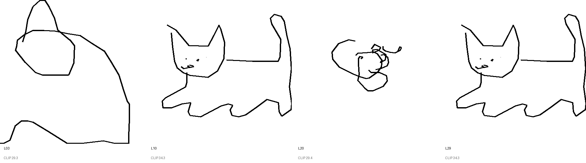
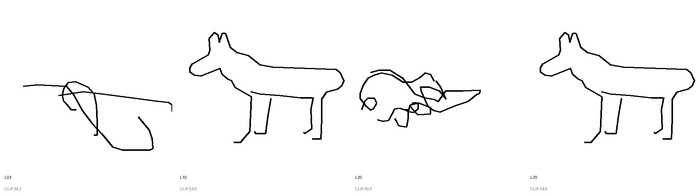
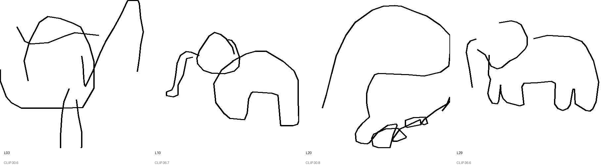
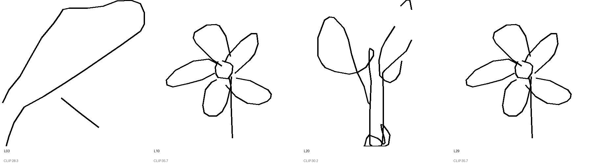
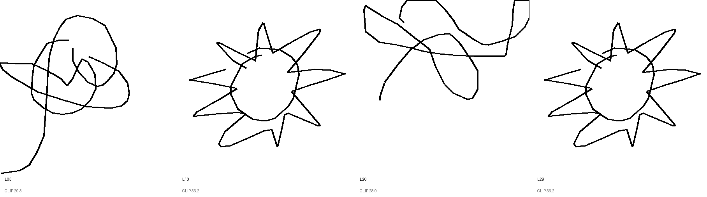
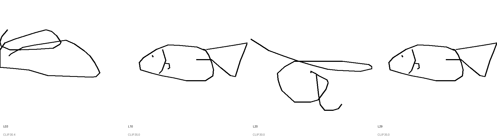
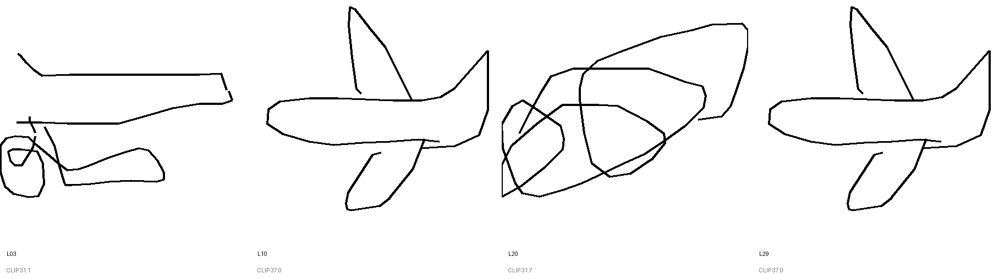
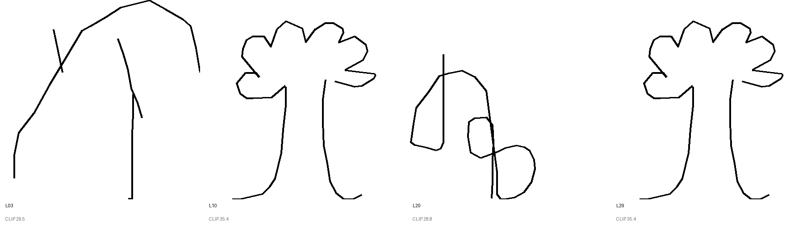

Layers: [3, 10, 20, 29]. For each prompt: same prompt, drawing emitted at each layer, best-of-32 CLIP-ranked.
cat — I am thinking about a cat.

dog — I am thinking about a dog.

elephant — I am thinking about an elephant.

flower — Imagine a flower in bloom.

sun — The sun is shining.

fish — Imagine a fish.

airplane — I am picturing an airplane.

tree — I am picturing a tree.
